To The Moon101 只是为了好玩…. Fück Utility、fück Discord 和 Twitter fück 路线图。我们没有这一切，但我们会把你带到月球上。 ▶ 什么是 To The Mo
tokenproof Founder's Circle tokenproof 意味着保护、访问和将 NFT 带入生活 消除连接您的钱包只是为了证明您的代币所有权的风险。 高枕无忧地访问您甚至不知道存在的事件、服务和其他令牌门。 NFT
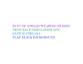 Tokens Equal Text 彩色 Vaporwave 文本的独特 ERC-998 组合，编码为 ERC-721 令牌 ID。 “Tokens Equal Text”通过一种不可拥有的美学流派批判性地循环了 Rare Art 的所有权驱动。 Tokens Equal Text”
Tokens of Trust 信任统计的令牌 创建于 6 个月前 100 代币供应 0% 费用 过去 7 天内没有出售任何信任代币。 这些是名为 Contagion 的 p2e 游戏的支持代币（赞助商代币）！！！ 请不要尝试直接
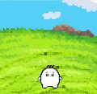 TOKIMEKI LIFE 时事生活 创建者 10 个月前 10代供电 10% 费用 过去 7 TOKIMEKI LIFE。 “tokimeki”tokoroten tokoroten tokoroten 的意思还是很清楚的。 . 这样一个不为人知的仙
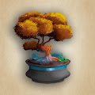 Tokyo Trees 东京树木统计 创建于 7 个月前 375 代币供应 7.5% 费用 过去 7 天内没有出售东京树。 Tokyo Trees 是 1,111 个日本盆景树 NFT 的集合 - 独特的数字收藏品，可让其所有者获得会员专属
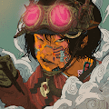 Tokyo@Steam-Punk 东京-黑泽 持有人福利制度 2022 黑泽明作品持有者每月空投（多边形链） 每月15日晚上11点59分（JST）查看作品和持有数量，并进行空投 - 至少一件 ETH
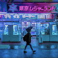 TOKYOLUV // EDITIONS TOKYOLUV // 版本统计 创建于 4 个月前 4 代币供应 5% 费用 过去 7 天内没有 TOKYOLUV // 版本售出。 我的版本是根据我自己的智能合约铸造的。 ▶ 什么是 TOKYOLUV // EDITIONS？ TOKYOLUV
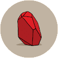 Tom Sachs: Rocket Factory - Mars Rocks 汤姆萨克斯：火箭工厂 - 火星岩石统计 创建于 3 个月前 15 代币供应 OpenSea 验证集合 10% 费用 10,991 名 Discord 成员 17,861 位推特关注者 Tom Sachs：Rocket Factory - Mars Rocks NFT 在过去
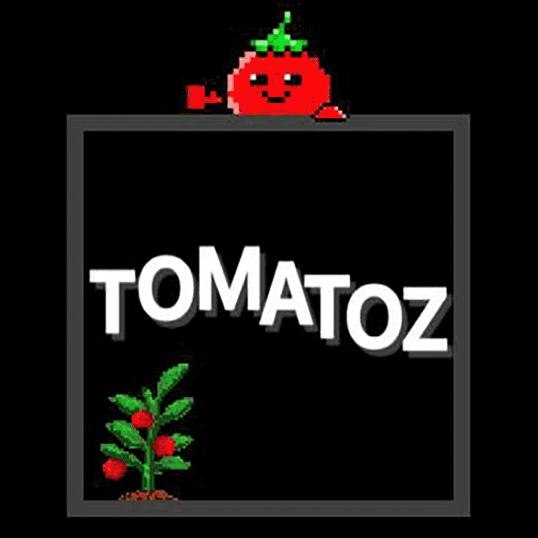 TOMATOZ 您是否知道赢得 6 位数彩票的概率是 13,983,816 分之一，Tomatoz - Heheland 是 9999 Tomatoz 的集合，旨在为错过的人提供更好的机会拥有 Potatoz (Memeland)。 我们用 Mint 的
TOMI MUSIC TOMI MUSIC 统计 创建于 8 个月前 50 代币供应 10% 费用 过去 7 天没有售出 TOMI MUSIC。超级挖掘这个项目的艺术品和一个巨大的粉丝.说再见。 这是一个时代的结束。 强
Tomoe Gozen Official NFT 8000 名女战士灵感来自平家物语和一个名叫 Tomoe Gozen 的女人的传奇故事。 Tomoe Gozen（巴御前）是日本历史上平安时代晚期的一位女武士。她在源平战争期间服务于
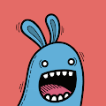 Toon Town Loons ToonTown 是一个以社区为中心的 NFT 收藏生态系统，具有从 100 多个手绘特征随机生成的独特且高质量的艺术品。ToonTown 是（元）世界，可收藏的这些生物，即
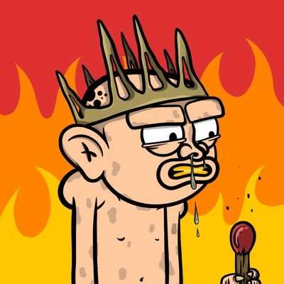 Toonanderthals NFT 迈出第一步，但已经是直背。采取下一个进化步骤并重生到 Web3。#primalscoming, Toonanderthals NFT 于 2022 年 8 月 17 日首次铸造。 我们目前正在追踪流通
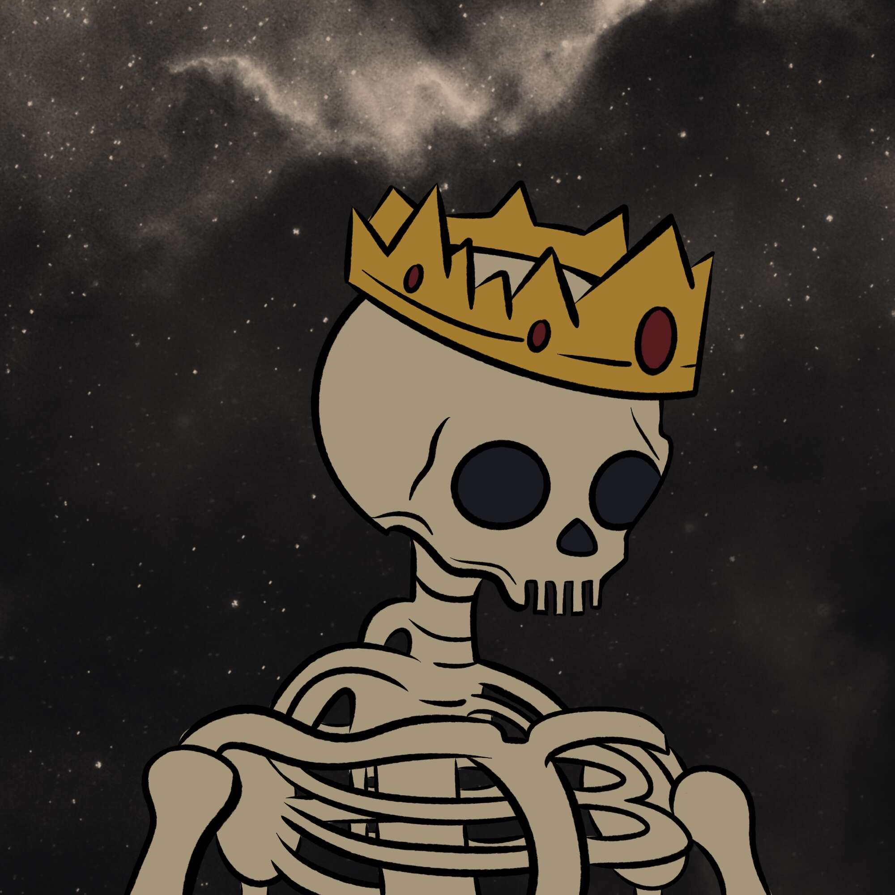 ToonKnights 卡通骑士统计 创建于 2 个月前 1,072 代币供应 3% 费用 ToonKnights NFT 在过去 7 天内售出 3 次。ToonKnights 的总销售额为 7.52 美元。一个 ToonKnights NFT 的平均价格为 2.5 美元。有
ToonPals Pass 共有 6,969 个 ToonPals 在以太坊区块链上启动以寻找新的 Pals！拥有 ToonPal 可让您访问 ToonPals 应用程序中的独家 AR 体验。在完成 50% 的公共铸币后，我们将推出一个 AR 创作者工具
Toons Official Toons 官方统计 创建于 4 个月前 4,447 代币供应 OpenSea 验证集合 10% 费用 Toons 官方 NFT 在过去 7 天内售出 41 次。Toons Official 的总销售额为 732.44 美元。Toons Official NFT 的平均价格为 17.9
Top Frogs Genesis 顶级青蛙 Top Frogs 是一个集合，其中包含 +230 种最精美艺术的手绘特征，这些特征生成在 500 个 Genesis Top Frogs 的集合中，它们将在以太坊区块链上生存和呼吸。TF Genesis 是 500 只青
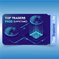 Top Traders Pass 顶级交易者通行证统计 创建于 3 个月前 4,760 代币供应 2% 费用 过去 7 天没有售出顶级交易者通行证。 铸币现场：https ://mint.toptraders.life 顶级交易者名单, 顶级交易者终身通行
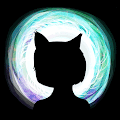 TopCatBeachClub 顶级猫海滩俱乐部统计 创建于 11 个月前 6,882 代币供应 5% 费用 7,076 名 Discord 成员 Top Cat Beach Club NFT 在过去 7 天内售出 9 次。Top Cat Beach Club 的总销售额为 363.19 美元。Top Cat Beach Club NFT 的
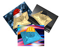 TopHat V2 TopHat V2 统计 创建于 6 个月前 320代币供应 5% 费用 过去 7 天没有售出 TopHat V2。 优雅的礼帽口袋方巾，保护您穿越元。 TopHat V2 NFT - 常见问题（FAQ） ▶ 什么是 TopHat V2
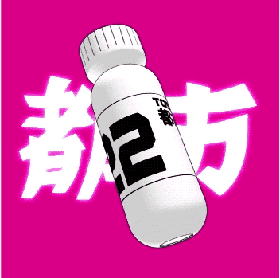 Toshimeta Pass 不仅仅是 NFT。 一个家庭。一个破坏者。一个可扩展的品牌。 Toshimeta 是一个从一开始就致力于为我们的会员提供定期、优质和令人兴奋的实用程序的组织。采用漫
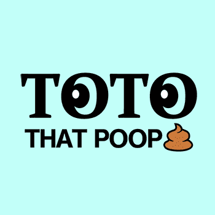 TOTO That Poop TOTO That Poop 统计 创建于 3 个月前 4,444 代币供应 10% 费用 过去 7 天内没有出售 TOTO That Poop。 薄荷免费-totothatpoop.xyz | 4444 MAX 🚽TOTO 大便在以太
TOTOS Discord Server Invite 此 NFT 验证您的服务器成员资格并授予您访问 totos.eth Discord 服务器的权限！ 底价由早期社区成员设定。这个 Discord 服务器邀请 NFT 是在 Expressionismo Totos 项目的公共 Beta 阶段铸造的。Espre
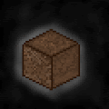 Touch Pixel Grass 触摸像素草统计 创建于 3 个月前 2,162 代币供应 2.5% 费用 过去 7 天没有售出 Touch Pixel Grass。 5000 块像素化的草地生活在以太坊区块链上，激励人们在这样的时代走出去
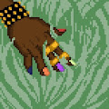 TouchGrass NFT 触摸草是为那些从不外出并住在父母地下室的人生成的。该项目属于公共领域；随心所欲地触摸草。没有路，只有草。 第一个生成的 Touch Grass NFT。 50% 的版税将捐
Touching Sensations 感动的感觉统计 创建于 4 个月前 2 代币供应 10% 费用 Touching Sensations NFT 在过去 7 天内售出 7 次。Touching Sensations 的总销售额为 629.3 美元。一份 Touching Sensations NFT 的平均价格为 89.9 美元。
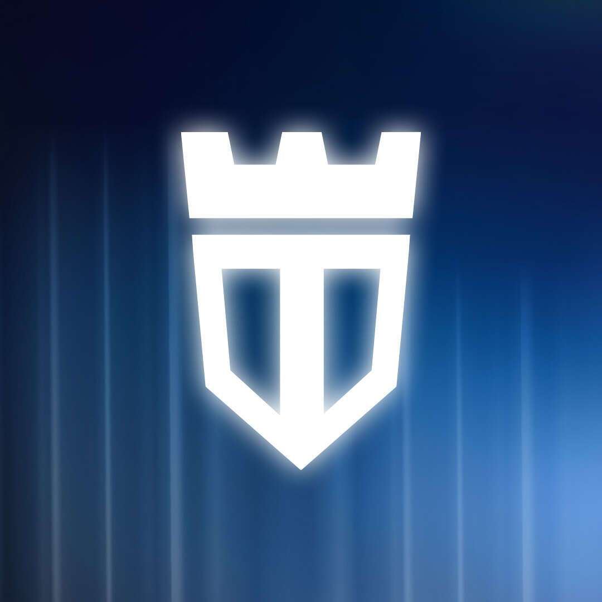 TOWER Battle Cards 雅达利入侵来了！ 下载 Crazy Defense Heroes 并潜入经典的 Atari 游戏世界！还可以前往 TOWER 网上商店，享受 Atari 游戏内优惠高达 30% 的折扣！ TOWER Battle Card NFT 的灵感来自 Animoca Brands 的传统手机游戏 -
TR Lab X AI 2041 Collector Cards 在TRLab，我们的使命是开创一种概念化和收集美术的新方法。凭借来自主要艺术收藏家、科技企业家和天使投资人的财团的420 万美元额外资金，我们
TRAF Episode 2 Mint Pass 这是红猿家族标志性的 NFT 预约系统。 一张 Mint Pass 可让您在公开发售前以折扣价购买下一集的 NFT。 薄荷通行证仅在上一集公开后的 7 天内有效。 TRAF 第 2 集 Mint Pass NFT
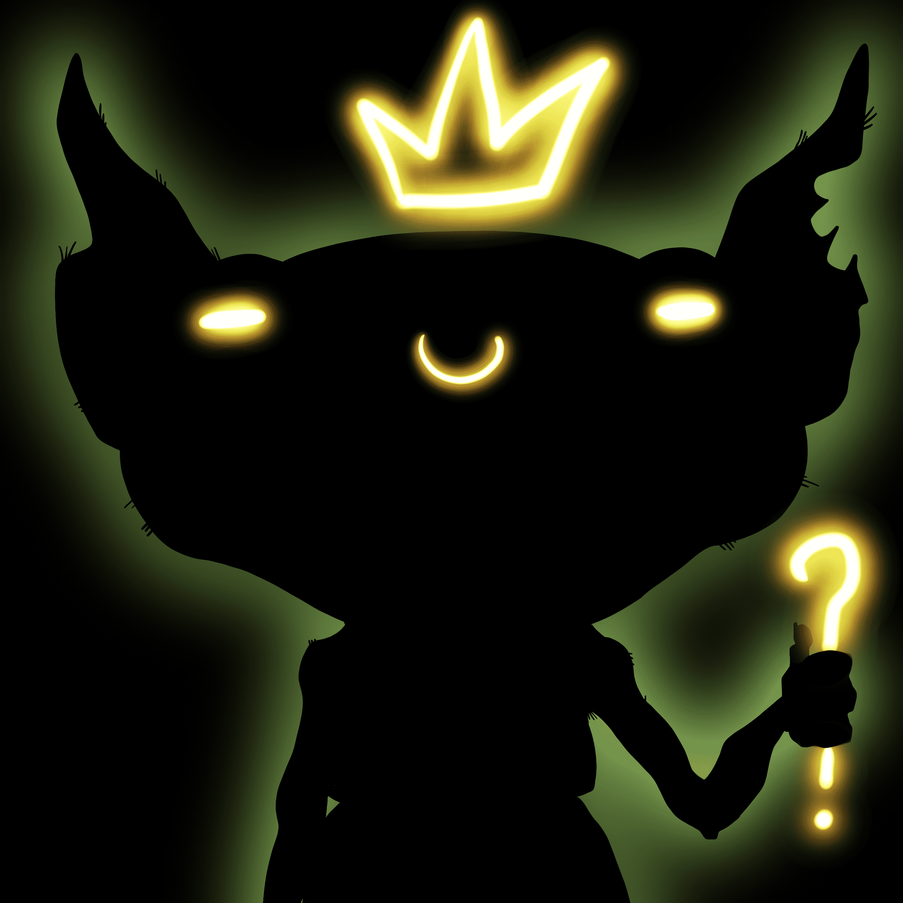 Trash Kingz cc0 下构建的所有 ziz 10000 个病态污垢 NFT 中的 kingZ #fortheculture 1 件免费薄荷糖给每个人 二等奖生病便宜 0.0055 垃圾盘线来了 ▶ 什么是垃圾王？ Trash Kingz 是一个 NFT（非同质代币）集合。
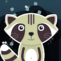 Trash Pandas of the World 垃圾熊猫是聪明的生物，它们住在树篱里，晚上在垃圾桶里打猎。他们最喜欢的零食是鱼骨，但他们会很高兴戴上一顶漂亮的帽子。它们是群居动物，尽管世界
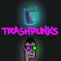 TRASHPUNKS V2 关于 iH0DL iH0DL 是一位 34 岁的美国加密艺术家，专注于数据安全、金融自由，最重要的是创造自由。“i”是一名战斗老兵，他开始创作艺术来帮助他的心理健康之旅
Travel Tokens NFT Drew 创建 TRAVEL TOKENS 是为了将他的1000 万社区聚集在一起并庆祝我们世界的美丽！这是有史以来第一个以旅行为重点的 NFT 集合，代表了地球上所有 197 个国家。 拥有 TRAVEL
Traveloggers 在遥远的银河系，一场革命导致了一场远离家乡的旅程。物质宇宙诞生了。 Traveloggers 拥有 Matters Lab 发布的 1,500 个数字化身，通过允许 NFT 的每个后续所有者记录一条消息，通过
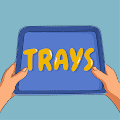 Trays 托盘统计 创建于 6 个月前 161代币供应 通过托盘钱包2.5% 费用 过去 7 天没有售出托盘。 Trays 包含 8,888 个独特的托盘，用于为慈善组织筹集资金！ 托盘 NFT - 常见
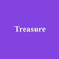 Treasure (For poor Adventurers) PolyLoot 是为可怜的冒险者生成并存储在链上的随机冒险者装备。 PolyLoot（针对可怜的冒险家）是 Polygon 上的官方战利品模仿叉 与其他分叉不同，我们 100% 的数字
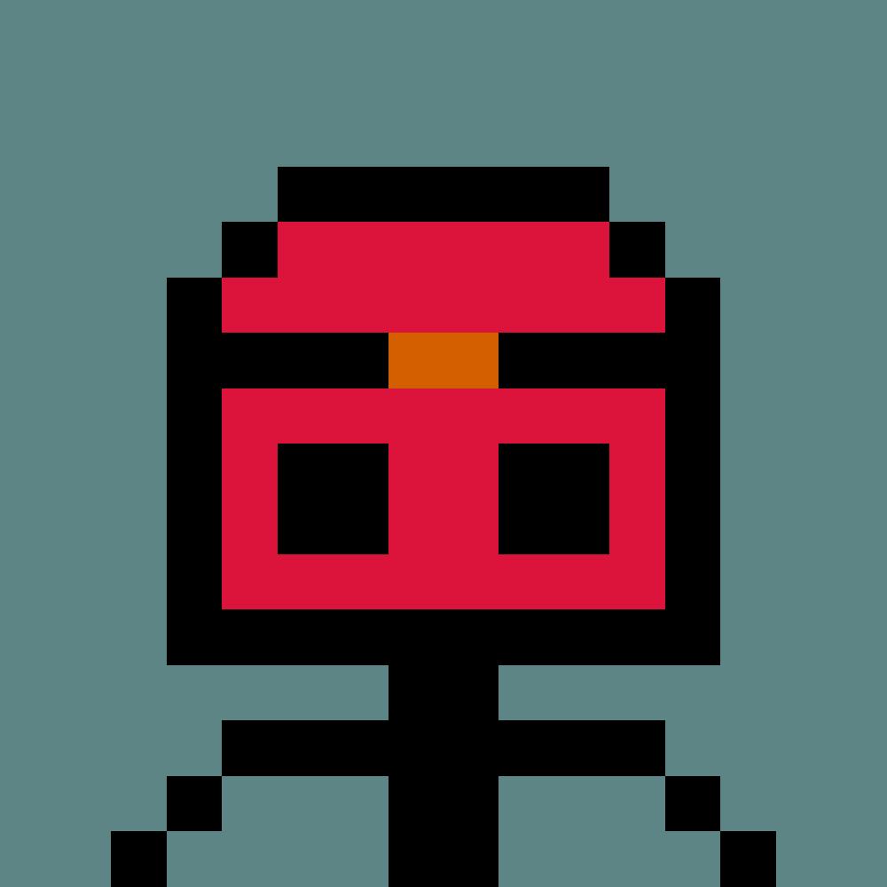 Treasure Hunters Club 寻宝俱乐部统计 创建于大约 2 个月前 888代币供应 10% 费用 过去 7 天，Treasure Hunters Club NFT 共售出 11 次。《寻宝者俱乐部》的总销售额为 61.7 美元。一个 Treasure Hunters
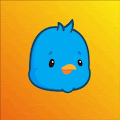 Trendy Twittahs 时尚的 Twittahs 统计数据 创建于 7 个月前 781代币供应 5% 费用 Trendy Twittahs NFT 在过去 7 天内售出 8 次。Trendy Twittahs 的总销售额为 94.41 美元。一个 Trendy Twittahs NFT 的平均价格为 11.8 美元
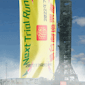 Trial and Error Stage Show 2022 Next Trial Run（简称NTR）作为试当真下一个试验项目，推出的不仅限于一张张图片，背后更代表了一份信念、一个会籍及一个社群。 NTR的持有者等于拥有